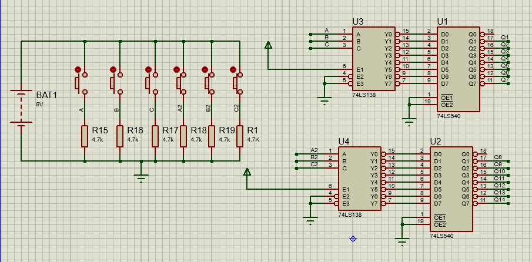
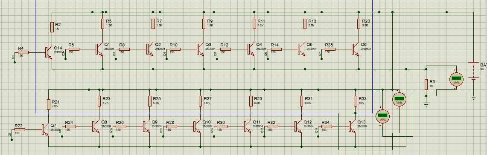
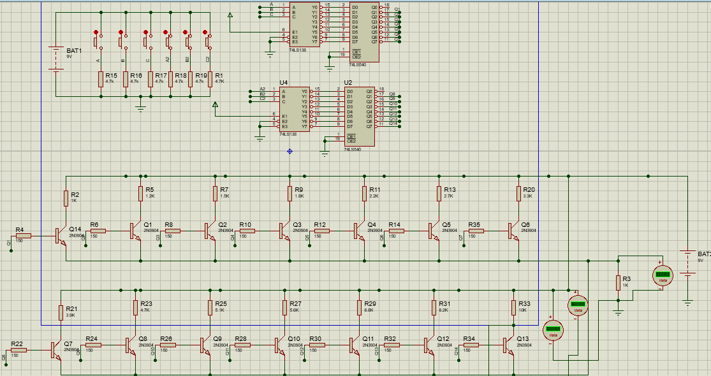

Multiplexores
El circuito integrado 74LS138 es un multiplexor, con la entrada en alto, con el fin de atraves de una codificación a través de los botones en pull down, poner en alto un solo canal. Este circuito se implementa dos veces, por lo que se tienen 6 bits para direccionar el valor de la resistencia.
Sistema de transistores
Los transistores en saturación sirven como conductores con el fin de que la corriente sea limitada por la resistencia previamente establecida. Es decir, la resistencia se encuentra entre el común de los colectores y el común de los emisores.
Esquema completo
